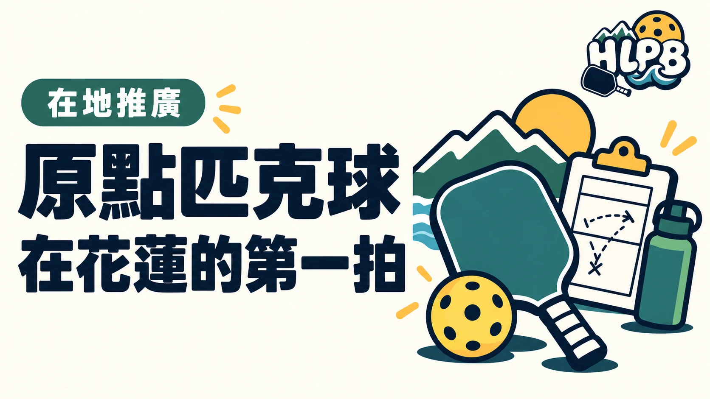

在花蓮推廣匹克球，常會遇到同樣的問題：「我沒有球拍，可以試嗎？」「完全不會打，能參加嗎？」「體驗完之後，要去哪裡繼續打？」
原點匹克球的工作，就是把這些問題一件一件接起來。從器材選擇、課程教學到社區體驗，希望讓接觸匹克球的門檻低一點，也讓第一次上場的人有機會繼續打下去。
從花東第一間匹克球專賣店出發
依原點匹克球提供的品牌沿革，原點是花東第一間匹克球專賣店，提供球拍與器材，也投入花蓮在地教學及推廣。
實體店的意義，不只是多一個購物地點。新手可以詢問器材差異、了解自己的需求，並透過試打感受不同球拍，減少只看網路規格卻不知道怎麼選的困擾。原點的課程、器材與推廣服務，也可在官方網站查詢。
把匹克球帶進社區與課程
原點持續參與花蓮的社區體驗、社區大學課程與青少年教學，並與太昌社區發展協會合作推動「原點第一拍」。
這項推廣安排從基本球感、過網、發球到簡單對戰，讓沒有基礎的人也能逐步參與。活動現場提供教學與試打器材，讓參加者先接觸、先感受，再決定是否繼續學習。
這些工作看起來是一場課或一次體驗，背後卻需要準備器材、安排人力、協調場地，以及依參加者的程度調整內容。
為什麼還要建立 HLPB？
在推廣過程中，原點發現，體驗結束後的資訊常常是斷開的。球友可能已經想打球，卻仍不知道場地怎麼使用、球聚在哪裡報名，或遇到規則問題該看哪裡。
因此建立了 HLPB 花蓮匹克球資訊站，把場地、球聚入口、花蓮賽事、器材入門與規則文章集中整理。希望每次推廣不只停在當天，也能陪大家找到下一次上場的方法。
讓花蓮的匹克球資訊更容易找到
原點希望以自己能做的教學、器材與資訊整理，支持更多人在花蓮接觸匹克球。HLPB 也歡迎其他在地單位與球友提供資料，讓這份資訊逐步完整。
網站仍有需要補充的地方。能把一個錯誤修正、一個報名入口寫清楚，或讓一位新手少繞一點路，就是持續維護的價值。
資料來源與延伸閱讀
品牌沿革及推廣經歷由原點匹克球提供；「花東第一間」為品牌沿革敘述。
資料來源：原點匹克球官方網站、品牌提供的沿革與活動紀錄
返回文章列表